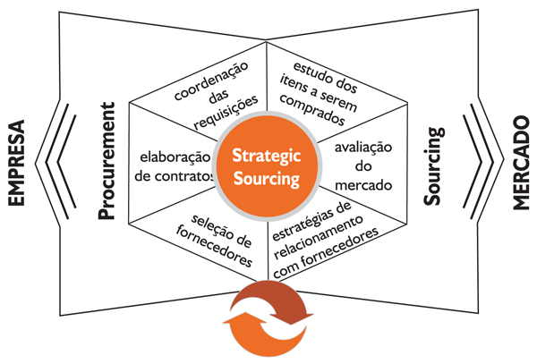
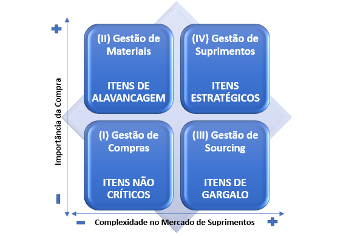
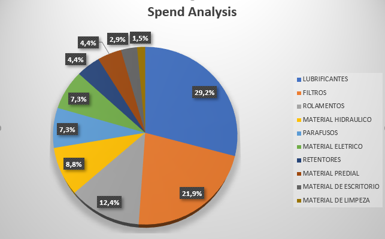
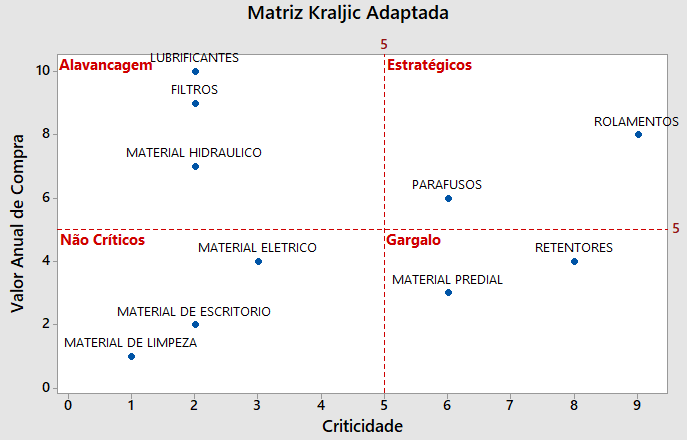

Suprimento e gestão de estoques MRO
A administração de materiais é um elemento importante no departamento de suprimentos de uma empresa e a gestão de estoques deve ser encarada com um olhar estratégico, identificando diferenças entre os itens, classificando-os e atribuindo políticas adequadas a cada classe. Da perspectiva do setor financeiro o estoque alvo ideal é o igual a zero, porém, segundo Dias (2010), os estoques são necessários para suprir as demandas durante os diversos estágios do processo produtivo até o cliente final, funcionando como um amortecedor entre os elos da cadeia produtiva.
Existem vários tipos de estoques quando se tratam de empresas produtivas, e estes estoques existem por diversos motivos; estoques de materiais diretos como matéria-prima, são necessários para compor o produto final durante o processo de produção, os estoques de produto acabado são necessários para o pronto atendimento ao consumidor final e existem também os estoques de materiais indiretos como por exemplo itens de manutenção, reparo e operação conhecidos como MRO ou peças sobressalentes de reposição, cuja gestão será abordada no presente estudo. Itens de MRO são materiais indiretos, ou seja, não fazem parte do produto final, são peças de reposição de máquinas e equipamentos, entre outros itens de consumo que segundo Oliveira (2013), são imprescindíveis para manter a produtividade das empresas, pois garantem que as linhas de produção não sejam interrompidas devido a falhas em máquinas. Para Chen et al (2019), itens de MRO são peças que apoiam as operações de produção e que não estão incluídos no produto acabado, são exemplos: suprimentos de manutenção, peças de reposição entre outros materiais de uso e consumo.
Existem vários aspectos e características das peças sobressalentes de reposição, que tornam sua gestão complexa, uma delas é a demanda irregular, esta característica comumente faz com que os administradores de materiais considerem manter estoques de segurança para todos os itens, o que eleva o capital imobilizado e aumentam os custos de armazenagem, para manter um nível de serviço satisfatório, visto que clientes internos são cada vez mais exigentes quanto a disponibilidade dos itens, pois o processo produtivo não pode sofrer interrupções ou atrasos.
Silva (2009), afirma que padrão de demanda intermitente e incerta é muito comum entre materiais indiretos como itens MRO. Portanto a gestão de demanda neste caso precisa seguir uma política exclusiva para essa categoria de materiais, para Ballou (2009) existem 3 fatores que devem ser levados em consideração, frente a impossibilidade de previsão por modelos matemáticos para itens de demanda irregular:
- Não reagir rapidamente às mudanças no padrão de demanda cujas razões não são identificáveis;
- Para artigos de baixa demanda, aumentar um pouco os níveis de estoque para compensar uma possível previsão inexata;
- É necessária a classificação dos materiais de forma a separar os artigos que apresentam demanda com sazonalidade, regularidade e tendência, dos artigos que apresentam demanda irregular ou incerta, para aplicar diferentes soluções de previsão.
Ballou (2009) afirma ainda que para itens de demanda irregular, uma alternativa interessante pode ser a previsão colaborativa, onde vários participantes de diferentes setores da empresa ou diferentes elos da cadeia de suprimentos colaboram cada um com seu know-how para uma previsão mais exata. Isto permite conhecer com profundidade os materiais, suas especificidades, aplicações, fontes de suprimento e gera total integração e comunicação entre a gestão de suprimentos e clientes internos, possibilitando uma otimização do fluxo de informações entre estes elos. A metodologia de compras strategic sourcing é um importante conceito de supply chain management que envolve métodos e ferramentas que determinam uma análise aprofundada de materiais para traçar estratégias de compras.
STRATEGIC SOURCING
O conceito de compras estratégicas ou strategic sourcing, é novo para o contexto das empresas brasileiras, porém segundo Marques e Maçada (2014) sua utilização começa no início da década de 90, quando os efeitos da globalização forçaram as empresas a reduzirem ao máximo possível seus custos para elevar a competitividade. No Brasil, esta metodologia começou a se popularizar nas empresas nos anos 2000 e ainda hoje a bibliografia brasileira sobre este assunto é bastante escassa.
Nunes et al (2016) define strategic sourcing como uma ferramenta da área de suprimentos em que se considera o custo total de aquisição por categoria de produtos ou serviços através do mapeamento, compreensão e avaliação das especificações dos itens, níveis de serviço e do mercado fornecedor, o que permite analisar os custos internos e externos, analisar otimizações na estrutura dos produtos, buscar um ponto ótimo no que diz respeito às requisições e níveis de serviço que aumentam o custo benefício de tal aquisição, aumentar o conhecimento do mercado fornecedor, ampliar a qualidade do material e tornar o fluxo de resposta do mercado mais ágil. Para Bim (2016), strategic sourcing possui mais de uma definição possível sendo elas resumidas como uma metodologia aplicada às áreas de suprimentos em que se utiliza o TCO – Total Cost of Ownership de cada categoria de materiais, analisa a situação atual com Spend Analysis – Diagnostico e Análise de Gastos, analisa com profundidade o que está sendo adquirido da perspectiva de mercado e das suas especificações, prevê a integração de equipes internas multifuncionais e fornecedores através de implementação de processos colaborativos.
A metodologia tem, portanto, o papel de elevar o patamar do setor de compras, relacionando-o diretamente com a estratégia da empresa, deixando de ser apenas operacional e reativo para participar ativamente do processo decisório, objetivando entre outras coisas, a redução dos custos e um fluxo de informação e integração entre as áreas de suprimento e stakeholders internos e externos. A figura 1 mostra a representação destes dois lados do setor de suprimentos com a implementação das compras estratégicas:
Braga (2010) conclui que os dois lados da figura se complementam, enquanto o lado de Sourcing representa a estratégia e a inteligência empregada ao setor de compras junto aos fornecedores, o lado de Procurement representa a operação e tática. Bim (2016) considera oito etapas na implementação da metodologia Strategic Sourcing, sendo elas divididas em três grupos cujas etapas têm objetivos similares, os grupos são: (1) Etapas de Fundamentação, onde se entende com profundidade o que está sendo comprado e qual categoria priorizar através de algumas análises, (2) Etapas de Elaboração de Estratégias, onde se extrai insights sobre o mercado e desenvolve-se modelos de fornecimento adequados e (3) Etapas de Negociação e Implantação, onde se conduz os processos de cotação, negociação e acordos de fornecimento.
Algumas ferramentas podem ser aplicadas a cada uma destas etapas para atingir seus respectivos objetivos. Como o foco do presente estudo se dá no campo das estratégias internas de suprimentos, utilizaremos o conceito da ferramenta Matriz Kraljic para a classificação dos materiais MRO que é baseada conceitualmente na Classificação ABC com criticidade. Ballou (2009) defende o uso da Classificação ABC para diferenciar as categorias de produtos e aplicar diferentes políticas de controle de estoques para cada uma, em vez de uma política única aplicada a todos os itens, uma vez que nem todos os itens tem a mesma relevância estratégica para a empresa, sendo possível desta forma, elevar o nível de serviço e diminuir os níveis de estoques.
MATRIZ KRALJIC
Kraljic (1983), discorre sobre a importância de uma mudança de perspectiva no setor de compras, passando de função operacional para função estratégica, o autor define que a estratégia de suprimentos de uma empresa depende basicamente de dois fatores: a importância estratégica da compra e a complexidade do mercado. Ao cruzar estas duas variáveis em um plano cartesiano, obtém-se uma matriz onde o eixo “x” representa a complexidade de fornecimento e o eixo “y” representa a importância estratégica da compra. Esta matriz foi nomeada pelo autor como “Estágios de Compra por Sofisticação” e resulta em quatro quadrantes que representam os quatro estágios de sofisticação: (1) Gestão de Compras: Itens não críticos, (2) Gestão de Materiais: Itens de Alavancagem, (3) Gestão de Sourcing: Itens de Gargalo e (4) Gestão de Suprimentos: Itens Estratégicos, conforme disposto na figura 2:
Kraljic (1983) enfatiza a abordagem destas quatro categorias para desenvolver estratégias individuais de suprimento para itens e materiais críticos.
Seguindo essa abordagem, a empresa primeiro classifica todos os seus materiais ou componentes adquiridos em termos de impacto no lucro e risco de fornecimento. Em seguida, analisa o mercado de abastecimento desses materiais. Então, determina sua posição de fornecimento estratégico geral. Por fim, desenvolve estratégias de materiais e planos de ação. (KRALJIC, 1983, p. 111).
Esta matriz é conhecida atualmente como matriz Kraljic e é muito utilizada por grandes empresas para a gestão estratégica de compras. Muitos autores a utilizam modificando-a para se adequar a várias realidades de empresas diferentes para solucionar problemas e atingir objetivos diversos. Neste estudo ela será adaptada para ser utilizada na classificação de materiais de MRO, baseado nas variáveis: Valor anual de Compras (eixo y) e Criticidade (eixo x) e o objetivo será a identificação e análise das categorias que são mais e menos complexas quanto à previsão de demanda, impacto no processo produtivo e impacto nos resultados financeiros, para que o setor de planejamento de materiais possa atribuir políticas de estoque adequadas.
Como uma das premissas para a construção da matriz Kraljic adapatada para a categorização de materiais de MRO é a definição da variável Valor Anual de Compras, faz-se necessário a criação do Spend Analysis, que é uma derivação da curva ABC para análise categorizada dos gastos elencados sob domínio do setor de suprimentos, ou seja, tirando os itens que não são negociáveis pelo setor de compras, como por exemplo, folha de pagamento e impostos.
O Spend Analysis segundo Nunes et al (2016), é a análise dos gastos negociáveis da empresa levantados em um período de 12 a 18 meses com informações relevantes sobre os produtos, fornecedores e clientes internos usuários, resultando em um mapa de gastos organizados em categorias, que reflete o atual cenário de gastos da organização. A figura 3 representa um resultado gráfico simplificado de um Spend Analysis.
Após a análise de custos e extração dos dados das categorias escolhidas, dá-se início a construção da matriz Kraljic cujo eixo “y” será definido com os dados do Spend Analysis, substituindo os valores monetários por pesos equivalentes em valores inteiros de 0 a 10.
Klippel, Antunes Junior e Vaccaro (2007) definem o eixo “x” da matriz de posicionamento estratégico de materiais - MPEM (adaptação da matriz Kraljic) como “risco de suprimento” onde se pondera quatro fatores baseados nas cinco Forças de Porter, são eles: Poder de Barganha, Substituição, Rivalidade e Barreiras de Entrada, cada fator tem peso de 0 a 5.
A matriz Kraljic adaptada proposta neste estudo difere da tradicional na composição da variável do eixo “x” que neste caso, representa a criticidade em vez da complexidade no mercado de suprimentos e será determinado de modo subjetivo pelos profissionais envolvidos, baseados em pesos de 0 a 10 de acordo com dois critérios: (1) complexidade na previsão de demanda do item e (2) impacto no processo produtivo. Conforme exemplo na figura 4, estes valores são definidos para cada categoria em uma tabela, juntamente com os valores extraídos do spend analysis.
A matriz Kraljic adapatada deve ser formada, portanto, com o cruzamento destes dados em um gráfico de dispersão com linhas de referência nas posições centrais (5) de cada eixo (X, Y) resultando nos quatro quadrantes conforme disposto na figura 5.
Klippel, Antunes Junior e Vaccaro (2007) sugerem uma abordagem distinta para cada quadrante de sua matriz de posicionamento estratégico de materiais (MPEM) sujeitas a realidades específicas de cada empresa: (1) para componentes não-críticos, reduzir o número de fornecedores para obter ganhos de escala; (2) para componentes competitivos ou alavancáveis, o autor sugere ações para diminuir o impacto que estes componentes exercem sobre o resultado financeiro da organização; (3) para componentes de risco ou gargalo, diminuir o risco de suprimento substituindo tais itens por outros de menor risco, alinhando com o setor de engenharia, e por fim, (4) para componentes estratégicos o autor sugere que devem ser tratados pela alta direção na medida em que envolve ações e decisões como construção de contratos a longo prazo com fornecedores importantes.
A matriz Estágios de Compras por Sofisticação de Kraljic (1983) divide os quadrantes em itens não críticos, itens de alavancagem, itens de gargalo e itens estratégicos, assim, mantendo este mesmo padrão de nomenclatura, podemos definir as categorias da matriz Kraljic adaptada, para se ajustar ao objetivo central, que é o correto planejamento de materiais MRO. Sugere-se, portanto, para este fim a seguinte abordagem: (1) Itens não críticos, com baixa complexidade de previsão de demanda, baixo impacto no processo produtivo e baixo impacto financeiro, devem ser tratados com menor prioridade em relação aos demais, onde a operação deve ser o máximo possível automatizada, objetivando estoque mínimo. (2) Itens de Alavancagem, com baixa complexidade de previsão de demanda, baixo impacto no processo produtivo e alto impacto financeiro, devem ser tratados com cuidado em relação aos níveis de estoques, deve-se parametrizar sistemas de MRP com os dados da previsibilidade com objetivo de ter estoque mínimo. (3) Itens de Gargalo, com alta complexidade de previsão de demanda, alto impacto no processo produtivo e baixo impacto financeiro, permitem um estoque de segurança maior para assegurar fluxo do processo produtivo sem interrupções. (4) Itens Estratégicos, com alta complexidade de previsão de demanda, alto impacto no processo produtivo e alto impacto financeiro, demandam maior prioridade na gestão, os estoques devem ser acompanhados e ajustados com frequência maior com base em conhecimento e em um perfeito fluxo de informação entre os clientes internos e a área de suprimentos, bem como um aprimoramento das políticas de manutenção das máquinas e equipamentos que os utilizam.
Com base nestas ferramentas, a visualização dos itens mais críticos é clara e permite que se priorize as ações e o esforço a um pequeno grupo que causa o maior impacto em vez de toda a base de SKU’s, tomando como princípio, o conceito de Pareto (1897) que se aplicado neste caso, teoricamente apenas 20% dos itens representariam 80% do impacto, ou seja o foco estratégico e o maior esforço se direcionam a apenas 20% dos itens. A tomada de decisão e o processo de planejamento de materiais se tornam mais fáceis e diferentes políticas de gestão de estoques podem ser aplicadas, de acordo com o posicionamento na matriz.